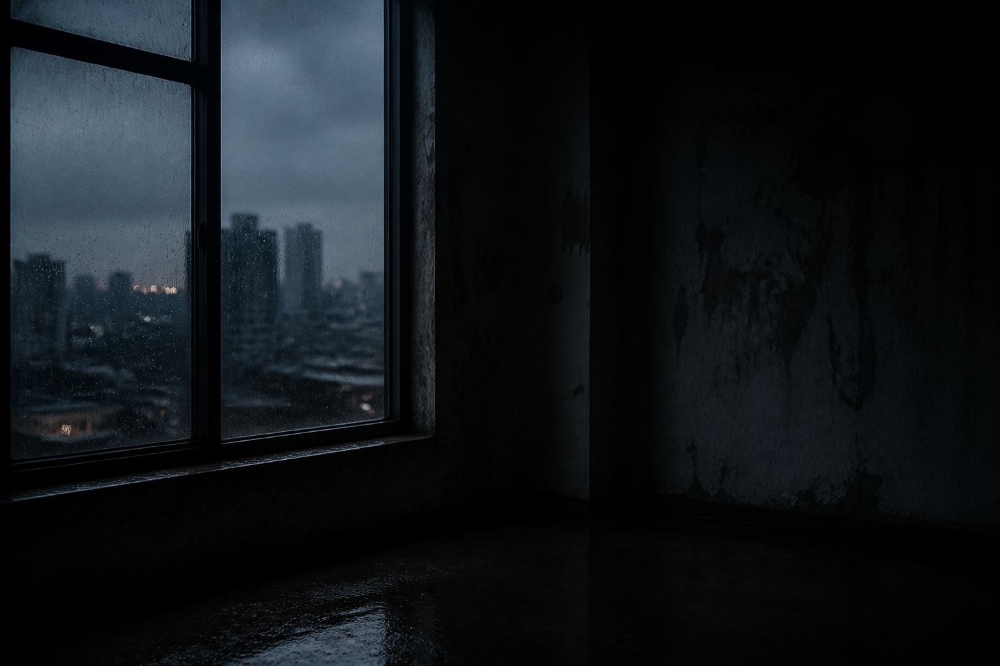

Scroll
Profile
2021-2026
Selected photographs, 2021-2026
把沉默、潮湿和微弱的光留在照片里。
我拍摄城市边缘、雨后的室内、被忽略的脸和空旷的下午。照片不急着解释， 它们更像一段缓慢下沉的时间。
我常常在快要没有光的时候按下快门。那时人会变慢，物体的边缘开始模糊， 空气里有一种不可言说的重量。相机记录的不只是场景，也是场景里没有发生的事。
Works
Archive
About
Camera J 是一名以纪实、人像和环境肖像为主的摄影师。长期关注城市生活中的 疏离感、普通人的身体姿态，以及自然光在封闭空间里的残留。